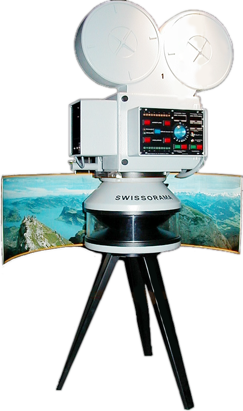
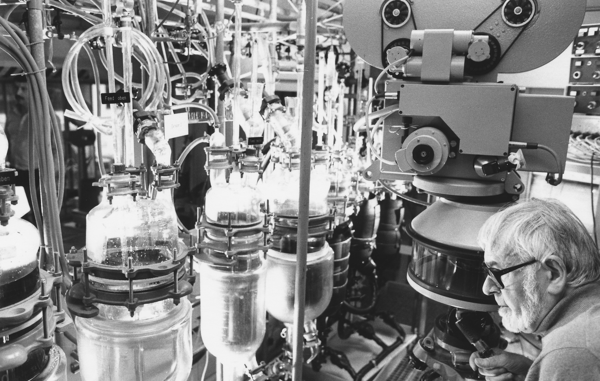
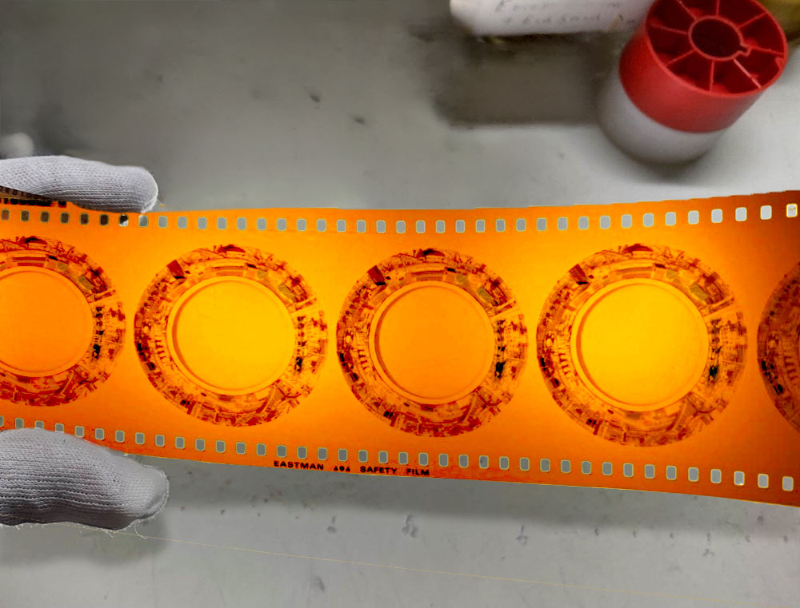

Do 17.09.2618:00 Uhr
Ausstellungs-
Eröffnung
loop, Weststrasse 118
8003 Zürich
8003 Zürich
Kontextualisierung · Veranstaltungen · Archiv
360°FILMSYSTEM SWISSORAMA
Kontextualisierungsprojekt
Seit Anfang 2025 recherchiert und dokumentiert der Verein 360 die Entstehungsgeschichte des einzigartigen analogen 360°-Filmsystems *Swissorama* mit dem Ziel diese filmtechnische Pionierleistung «Made in Switzerland» einem interessierten Publikum zugänglich zu machen.
Mit einer Veranstaltungsreihe in Zürich, Luzern und Frauenfeld im Herbst 2026 werden erste Resultate des Projekts vermittelt.

Kontextualisierungsprojekt
Swissorama war ein weltweit einzigartiges analoges 360°-Filmsystem im 70mm-Filmformat. Mit einer speziell entwickelten Kamera- und Projektionstechnik konnte erstmals ein nahtloses Rundum-Filmbild auf eine kreisförmige Leinwand projiziert werden.
Der erste Swissorama-Film «Impressionen der Schweiz» feierte 1984 im Verkehrshaus der Schweiz in Luzern Premiere. Im eigens dafür gebauten Rundkino erlebten bis zur Schliessung im Jahr 2002 rund 1,8 Millionen Besucherinnen und Besucher die Schweiz in einem damals revolutionären Format.
Entwickelt wurde Swissorama vom Schweizer Fotografen und Oscar-prämierten Filmemacher Ernst A. Heiniger in Zusammenarbeit mit der Firma Contac Engineering AG in der Schweiz. Sein Ziel war es, mit dem Prinzip «eine Kamera – ein Projektor – ein Film» ein vollkommen immersives Kinoerlebnis zu schaffen.
Obwohl das System international Aufmerksamkeit erregte, entstanden neben «Impressionen der Schweiz» zwischen 1988 und 1992 nur drei weitere Swissorama-Filme: für ein extra erbautes, blaues Kugelkino in Berlin, sowie Ausstellungen auf der Insel Shikoku (Japan) und Sevilla (Spanien).
Mehr als 20 Jahre nach der Schliessung des Kinos im Verkehrshaus der Schweiz erhielt der Film ein zweites Leben: Wiederentdeckte Negative wurden von der Cinémathèque Suisse digitalisiert und als Virtual-Reality-Version aufbereitet. Gleichzeitig wurde die verschollen geglaubte Tonspur im Verkehrshaus wiedergefunden.
Dank der Initiative des Vereins 360 und des Verkehrshauses der Schweiz kann der 18-minütigie Film heute auch im Planetarium projiziert werden. So bleibt das einzigartige Erbe dieser filmtechnischen Pionierleistung auch für kommende Generationen erlebbar.

Programm
Kontextualisierung und Vermittlung der Recherchearbeit um das Swissorama.
in Zusammenarbeit mit pool-Architekten, Zürich
geführter Besuch Panorama Einsiedeln
13:00 Treffpunkt: Eingang Panorama Einsiedeln
Eintritt: Kollekte
Infos und Anreise: https://panorama-einsiedeln.ch/de/
Anmeldung per Email an info@verein360.ch
Screening, Einführung oder Präsentation von historischem Material.
Hier kann ein Infotext zum Luzerner Teil stehen: beteiligter Ort, thematischer Schwerpunkt, Öffnungszeiten oder organisatorische Hinweise.
Präsentation des Projekts mit lokalem Schwerpunkt und ausgewähltem Bildmaterial.
Geführter Rundgang durch Material, Fragen und historische Zusammenhänge.
Hier steht ein kurzer Text zur Station Thurgau: regionaler Kontext, besondere Fragestellung oder Hinweise zu Vermittlung und Programm.
Einblick in Recherche, Archivmaterial und offene Fragen rund um Swissorama.
Abschlussgespräch mit Beteiligten und Publikum.
Über uns
Verein 360 widmet sich der Erforschung, Vermittlung und Kontextualisierung des Swissorama.

Hier kann ein weiterer Erklärungstext stehen: Wer arbeitet am Projekt? Warum interessiert euch Swissorama? Mit welchen Institutionen, Archiven oder Personen arbeitet ihr zusammen?
Oral History
In Gesprächen sammeln wir Erinnerungen, Erfahrungen und Perspektiven rund um Swissorama.
Hier kann ein kurzer Text zum Oral-History-Teil stehen: Wer wird interviewt? Welche Fragen stehen im Zentrum? Was soll durch die Gespräche sichtbar werden?